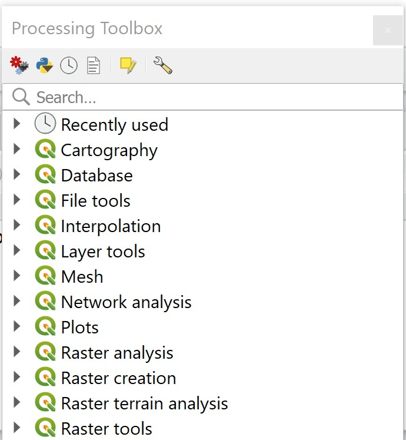
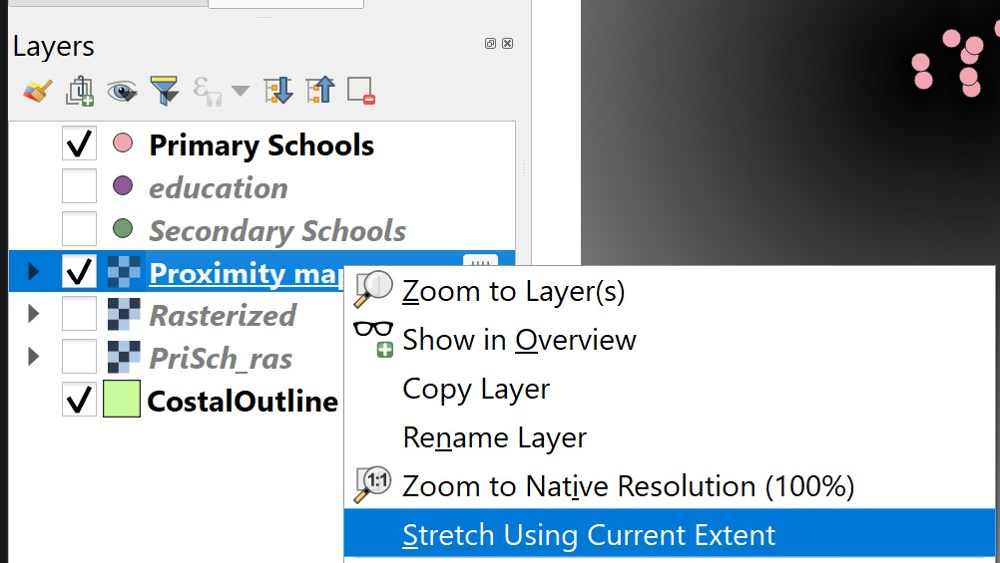
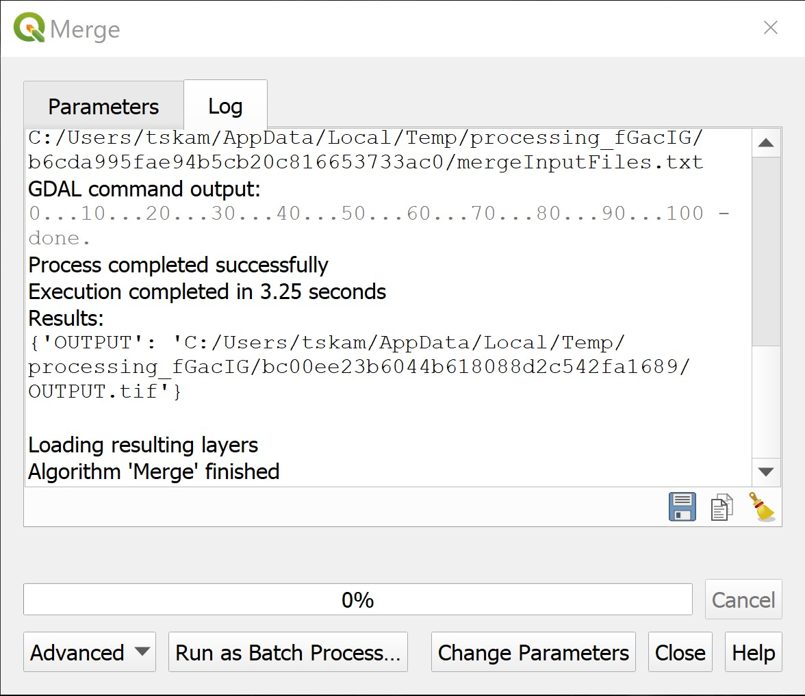
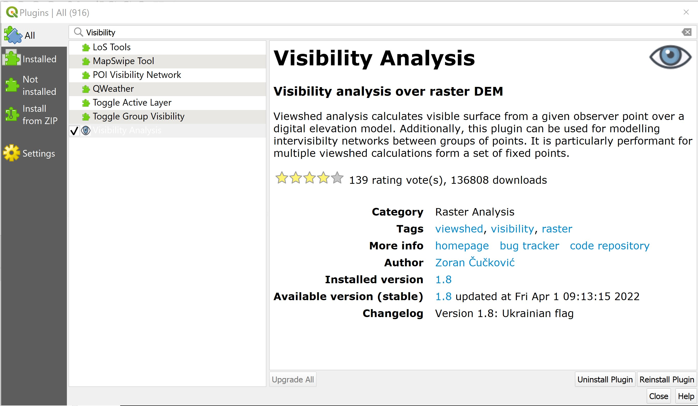
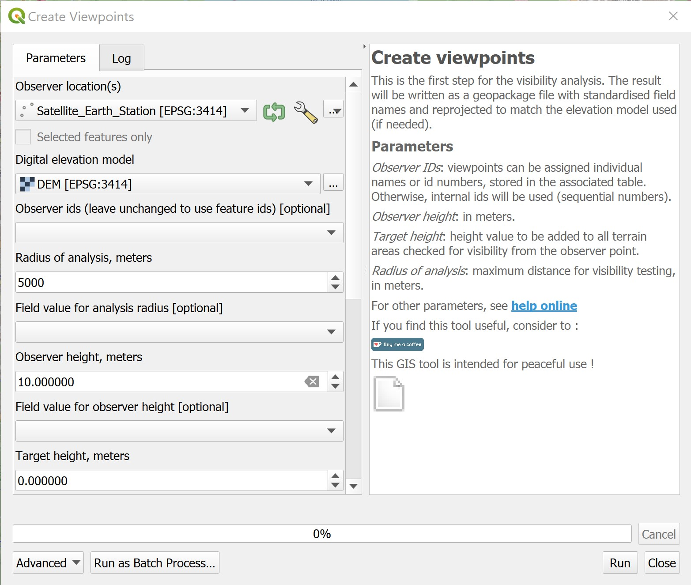
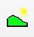

7 Cartographic Modelling with Raster-based GIS
The true power of a GIS is its analytical capability. In this hands-on exercise, you will learn how to perform raster-based GIS analysis also popularly known as mapthematics by using QGIS.
By the end of this session, you will be able to:
create a raster data from a vector GIS layer,
extract raster layer,
georeference a raster layer and
derive proximity layer(s) by using distance function of QGIS.
7.1 Data Preparation
Two GIS data are available for the analysis. They are:
- Location of primary, secondary, mixed and JC (i.e. Education).
- Outline map of Singapore (i.e. CoastalOutline).
7.1.1 Add the GIS data into QGIS Project
Before you can start to perform any analysis, you need to start a new QGIS project.
DIY: Using the steps you had learned from last lesson, add the Education and CoastalOutline into the newly created QGIS project.
7.1.2 Using attribute query to select a subset from a master layer
The Education layer consists of locations of education institutions such as primary schools, secondary school, mixed and JC. We are only interested on education institutions that belong to primary and secondary schools.
DIY: Using the steps you had learned from last lesson, extract and save the primary and secondary schools in two separate GIS vector layers.
Your screen should look similar to the figure below.

7.2 Raster Data Modelling
In this exercise, you will learn how to model raster data. The exercise focusses on how to rasterise a vector GIS data layer using QGIS geoprocessing functions.
7.2.1 Editing attribute data
In this section, you will create a new field in the attribute table of a vector GIS data and update values of the newly created field. You will name the field as POI_CODE. The data type of this data field is integer.
- At Browser panel, right-click on the
Primary Schoolslayer. - Select Open Attribute Table from the context menu.
The Attribute table dialog window of Primary Schools appears.

- From the icon bar of the Attribute table window, click on the Open field calculator icon.
The Field calculator dialog window appears.
- For Output file name, type POI_CODE.
- For Output filed type, select Whole number (integer) from the drop-down list.
- For Output field, change to 3.
- At the Expression pane, type 1.
The Field calculator dialog window should look similar to the figure below now.

• Click on the OK button.
Notice that a new field called POI_CODE has been added into the Attribute table of Primary School. Also notice that the POI_CODE values are 1s.
You will end the editing process now.
- At the icon menu of Attribute table window, click on the Toggle editing mode icon.

The Stop editing dialog window appears.

• Click on the Save button.
Now, you will close the Attribute table window of Primary Schools layer.
- At the Attribute table of Primary Schools, click on the Close button.
7.3 Rasterising a vector GIS data layer
In QGIS, several functions can be used to rasterise a vector GIS layer into a raster GIS layer such as Rasterize function of GDAL and the Shape to Grid function of SAGA. In this section, you will learn how to rasterise the primary school vector GIS layer into a raster GIS layer using the Shapes to grid function of SAGA because we found that it is more effective.
- From the menu bar of QGIS, select Processing -> Toolbox.
The Processing Toolbox pane appears at the right hand side of the Map View window

- From the Geoprocessing Toolbox, click on GDAL -> Vector conversion -> Rasterize (vector to raster).

The Rasterize (Vactor to raster) dialog window appears.
- For Input layer, select
Primary Schoolfrom the drop-down list. - For Field to use for a burn-in value [optional], select
POI_CODEfrom the drop-down list. - For Output raster size unit, select Georeferenced units from the dropdown list.
- For Width/Horizontal resolution, type 50.
- For Height/Vertical resolution, type 50.
- For Output extent, select Calculate from layer -> CostalOutline from the drop-down list.
Your screen should look similar to the figure below.

- Click on the Run button.
After a few seconds, a new raster layer called the Grid will be added onto the Browser panel.

- From Rasterize dialog window, click on Close button to close the dialog window.
Let us take a good look at this newly created raster layer. According to the legend, the primary school cells will be coded as 1 and the remaining grid cells will be coded as no data.
DIY: Use the Identify tool of QGIS to validate if the data layer has been coded correctly.
Quiz: What is the value of the dark cell in Grid layer: ___________________
Quiz: What is the value of the white cell in Grid layer: __________________
DIY: Using the step you learned from previous exercise, save the output raster into GeoPackage format. Call the layer
PriSch_ras.
7.4 Accessibility Modelling using Raster-based GIS Analysis
In this section, you will learn the basic concept of accessibility from geospatial perspective. You will also learn how to use appropriate raster GIS analyse function and mapping techniques to analyse and visualize accessibility maps.
7.5 Creating proximity layer using raster GIS analysis
In this section, you will learn how to perform proximity analysis and derived distance layer using raster GIS analysis function. You will use the raster version of the primary school layer as the target layer in the analysis instead of the vector version of the primary schools layer (Do you know why?)
You will perform the task using the rasterize function of Geospatial Data Abstraction Library (GDAL), a library for reading and writing raster geospatial data formats, and is released under the permissive X/MIT style free software license by the Open Source Geospatial Foundation. As a library, it presents a single abstract data model to the calling application for all supported formats. It may also be built with a variety of useful command-line utilities for data translation and processing (http://en.wikipedia.org/wiki/GDAL).
- From the Processing Toolbox panel, navigate to GDAL Analysis -> Proximity (raster distance).

- Double-click on Proximity (raster distance).
The Proximity (raster distance) dialog window appears.
- For Input layer, select Rasterize from the drop-down list.
- For A list of pixel values in ……, type 1.
Quiz: Explain why value 1 is used?
- For Distance units, select Georeferenced coordinates from the drop-down list.
- For the other three options, keep as default (e.g. -1).
- For Proximity Map, select Save to a temporary file from the context menu.
The Proximity (raster distance) dialog window should look similar to the figure below.

You are ready to run the function.
- Click on the Run button.
After a few seconds a new layer called Proximity Map will be added into the Browse panel and display as a raster layer on the Display window.

Before we continue, let us close Proximity dialog window.
- From the Proximity dialog window, click on Close button.
Let us explore the Proximity Map layer.
- Display the Primary School layer.
Your screen should look similar to the figure below.
- Zoom into a
Primary Schoollayer.

Your screen should look similar to the figure below.

In order to visualise the grid values properly, we need to stretch the cell values.
- From the Layer panel, right-click on Stretch Using Current Extent.

Now, a clear grid layer appears on the Map View window.

Now, you will examine the value of the grid.
- Make sure that
Proximity Maplayer is active. - Hover the mouse over the primary school point.
- Click on the grid.
The Identify Results dialog window shows that the value of the selected grid is 0.
Next, you will examine the value of the grid immediately next to the primary school.
- Hover the mouse over the grid next to the primary school point.
- Click on the grid.
The Identify Results window reveals that the value of the selected grid is 50.
DIY: Using the skills you had learned from previous section, save the Proximity Map into Geopackage format.
7.6 Terrain Analysis and Visualisation
Elevation and related terrain variables are important in most people lives. Terrain determines the natural availability and location of surface water, and hence soil moisture and drainage. Terrain also strongly influences the location and nature of transportation networks, and the cost and methods of house and road construction. Prior to the introduction of GIS, the modelling and analysis of terrain data was a very mathematically demanding process which was usually only performed by geoscience and mapping science specialists. Today, modern GIS tool such as QGIS has made terrain modelling, anaysis and mapping relatively easy to perform by casual data analysts. In this section, you will learn how to:
- download Digital Elevation Model (DEM) data from online open source repository,
- mosaic multiple DEM data into one,
- extract DEM for a study area,
- compute terrain parameters such as slope, aspect, and hillshading, and
- perform visibility analysis.
7.6.1 Downloading DEM data from USGS Earth Explorer
There are four DEM data can be obtained free of charge. They are:
- Shuttle Radar Topography Mission (SRTM) 30-meter digital elevation model data from the USGS Earth Explorer.
- ASTER Global Digital Elevation Model (GDEM) data from from the USGS Earth Explorer.
- JAXA’s Global ALOS 3D World the JAXA Global ALOS portal.
- Light Detection and Ranging (LiDAR) by vising the link.
For the purpose of this hands-on exercise, you will learn how to download SRTM 30m DEM from USGS Earth Explorer portal.
- Click on USGS Earth Explorer.
Earth Explorer homepage opens.
Before you can download any data set from this portal, you need to register.
- Click on Login button located at the upper-right corner of the webpage.
The registration page appears.
- Complete the online registration including verify the registration.
Now you are ready to select and download the DEM data sets covering Singapore.
- Return to USGS EarthExplorer.
7.6.1.1 Setting the area of interest
- By combining zooming and panning functions of your mouse, navigate to Singapore until your screen look similar to the screenshot below.
- Now, select the Use Map button.
Notice that the Singapore including the outer islands, part of Johore Bahru and Batam Island are now selected
7.6.1.2 Selecting the DEM data to download
Next, we will select which data set to download.
- Click on Dataset tab.
Next, click on the cross in front of Digital Elevation.
Further click on SRTM.
Lastly, click on the check-box in front of SRTM 1 Arc-Second Global.
Your selection should look similar to the screenshot below.
7.6.1.3 Downloading the selected data
Now, we a ready to download the selected data.
- Click on Results tab.
Notice that two data sets are found and list below.
Technically, you can download them at one goal. However, in this section, let us download them one by one.
- At SRTM1N00E103V3 pane, click on .
The Loading Option popup window appears.
Since we are going to perform raster processing on the data, it is recommended to download the GeoTIFF version, which will be the largest file size.
- Click on the Download button in front of GeoTIFF 1 Arc-second (24.76 MiB).
DIY: Using the steps you had learned, download SRTM1N00E104V3 data.
Create a new sub-folder called DEM in the hands-on exercise folder.
Move both downloaded data onto the newly created DEM sub-folder.
7.6.2 Importing DEM data into QGIS
Let us import both data into QGIS.
- From the menu bar, select Layer -> Add Layer -> Add Raster Layer.
Data Source Manager|Raster dialog window appears.
- Click on the icon at the back of Raster dataset(s).
Open GDAL Supported Raster Dataset(s) dialog window appears.
Press on ctrl key and click on both n01_e104_1arc_v3 and n01_e103_1arc_v3 data sets.
Click on Open button.
You will return to Data Source Manager|Raster dialog window.
- Click on Add button.
Notice that the two DEM layers have been added in QGIS.
- Click on Close button to close the dialog window.
7.6.3 Combining adjacent raster layers into one
Now, we are going to combine both DEM layers into a single DEM layer by using the merge function of QGIS.
- From the menu bar, select Raster -> Miscellaneous -> Merge.
Merge dialog window appears.
- For Input layers, click on the icon behind.
Merge dialog window appears.
- Click on the checlboxes in front of n01_e103_1arc_v3 and n01_e104_1arc_v3
- For Output data type, select Int16 from the drop-down list.
When you are ready to execute the operation, click on Run button.
Click on Close button when Merge dialog window prompted that the process finished without any error.

Your screen should look similar to the screenshot below.
By default, the DEM layer has a poor contrast, as a result, the layer appears very dark. We can hardly see anything.
- At the lower right corner of the View window, select 1:50000 from the drop down list.
Your screen should look similar to the screenshot below.
- From the Layers panel, right-click on Merged, then select Stretch Using Current Extent from the context menu.
Now, you can see Merged layer clearly.
DIY: Using the method you had learned, display the view with full extend.
Your screen should look similar to the screenshot below.
7.6.4 Extracting raster data layer
Notice that Merged layer include part of West Malaysia and Batam Island of Indonesia. Next, you will learn how to extract DEM raster layer with Singapore.
First, we are going to select area within Singapore mainly from Coastal Outline layer.
- From the icon bar, click on Select Feature(s) icon.
- Hover the mouse at the centre of Singapore island then click on the left mouse button to select.
Your screen should look similar to the screenshot below.
Next, we are going to use the raster data wrangling tool to extract DEM layer falls within Singapore main island.
- From the menu bar, select Raster -> Extraction -> Clip Raster by Mask Layer.
Clip Raster by Mask Layer dialog window appears.
For Input layer, select Merged from the drop-down list.
For Mask layer, select CostalOutline from the drop-down list.
Because we are interested to extract only area falls within Singapore main island, it is important to click on the checkbox in front of Select features only.
Your screen should look similar to the screenshot below.
- Keep the rest as default, then click on Run button to execute the process.
- Close the dialog window if the process completed without any error.
Notice that a new layer called Clipped has been added on Layers panel and display on View window.
DIY: Using the steps you had learned, save the Clipped layer into Geopackage database. Call the raster layer DEM.
DIY: Using the steps you had learned, remove the raw DEM layers, temporaly Merged and Clipped layers from QGIS.
7.6.5 Visibility Analysis with Raster GIS
Visibility analysis is a widely used function in GIS. It identifies areas that can or cannot be seen from a single (or a set of) viewpoint(s). The clearly visible parts of an observer’s surrounding area, as well as hidden parts, may thus be evaluated.
Visibility analysis proves useful when selecting the best or optimal locations in urban studies, e.g., placement of various facilities which should be made visible (nice, interesting places) or those which should be rather hidden (e.g. wind turbines). Apart from architecture, visibility analysis is useful for tourism purposes, archaeology, communication engineering, and may be highly serviceable in the military.
In this section, you will learn how to perform visibility between two Satellite Earth Stations by using QGIS.
7.6.5.1 Importing the Satellite Earth Station GIS data
First, you need to import the Satellite Earth Station shapefile into QGIS.
DIY: Using the steps you had learned, import Satellite_Earth_Station shapefile from shapefile folder into QGIS.
Your screen should look similar to the screenshot below.
7.6.5.2 Installing Visual Analysis plugin
Next, you will install Visibility Analysis plugin.
- From the menu bar, select Plugins -> Manage and Install Plugin.
Plugin dialog window appears.

At Search bar, type Visibility.
Click on Visibility Analysis then click on Install Plugin button.
When the installation completed,
- Click on Close button to close the dialog window.
7.6.5.3 Creating viewpoint layer
Before we can perform visibility analysis, a viewpoint layer must be created.
- From the menu bar, select Processing -> Toolbox.
Notice that Processing Toolbox panel is added on the right of the View window.
At the Processing Toolbox panel, click on the black triangle in front Visibility Analysis to expand the menu options.
Then, click on the triangle next to Create viewpoints and double-click on Create viewpoints tool.

Create Viewpoints dialog window appears.
For Observer location(s), select Satellite_Earth_Station from the drop-down list.
For Digital elevation model, select DEM from the drop-down list.
For Radius of analysis, meters, type 5000.
For Observer height, meters, type 10.
Your screen should look similar to the screenshot below.

When you are ready to run the function, click on Run button.
When the process ended without any error message, click on Close button to close the dialog window.
Notice that a new temporary layer called Output layer has been added in the Layers panel and display on View window,

Let us examine the content of the attribute table of this newly derived GIS layer.
- From the Layers panel, right-click on Output layer then select Open Attribute Table from the context menu.
Attribute table of Output layer appears.
Notice that two new fields have been added into the attribute table of Output layer. They are observ_hgt and radius. Also note that the field name POI_ID has changed to ID.
DIY: Using the steps you had learned, save Output layer into Geopackage format. Name the layer Viewpoints. Also, remember to remove Output layer from Layers panel.
Now we are ready to perform visibility analysis by using Viewshed function of Visibility Analysis plugin.
- From Processing toolbox, click on Visibility analysis -> Analysis -> Viewshed.
Viewshed dialog window appears.
- For Analysis type, select Binary viewshed from the drop-down list.
This option will output a raster with values 0 and 1. 0 indicates not visible locations and 1 indicates visible locations.
For Observer location(s), select Viewpoints from the drop-down list.
For Digital elevation model, select DEM from the drop-down list,
Be warn: It is important to ensure that the CRS of both the Observer location(s) layer and Digital elevation layer are the same.
- For Combining multiple outputs, select Addition from the drop-down list because multiple viewpoints are used.
- When you are ready to run the function, click on Run button.
When the process ended, read the process log to ensure that the process has been completed without any error.
- Click on Close button to close the dialog window.
Notice that a new binary raster layer called Output file has been added into Layers panel and display on View window.
DIY: Using the steps you had learned, save Output file temporary layer into Geopackage format. Name the layer Visibility layer.
7.6.5.4 Symbolising raster layer
By default Visibility layer is shaded with gray colour. Now, we are going to symbolise Visibility layer.
- From Layers panel, right-click on Visibility and select Properties from the context menu.
You screen should look similar to the screenshot below.
- For Render type, select Paletted/Unique values from the drop-down list.
- Click on Classify button.
Notice that the colour palette changed.
Click on Apply button to update the changes.
When it is done, click on OK button to close the dialog window.
You screen should look similar to the screenshot below.
The areas shaded in green are location not visible from both Satellite towers. The areas shaded in red are locations observed by at least one of the satellite tower. Lastly, areas shaded in purple-blue (with value 2) are locations visible by both satellite towers.
DIY: By applying appropriate symbolising methods for raster layer you had learned, design a cartography quality view look similar to the screenshot below.
7.6.6 Profile Analysis
Another useful GIS analysis using DEM is calling profile analysis. Profiles or more appropriately called topographic profiles are cross-sectional views showing elevation along a line. In other words, if you could slice the Earth along that line and view it from the side, that two-dimensional graph displaying height would be a topographic profile.
Figure below shows a cross-section profile view of Singapore Island Country Club. The red line on the map is the cross-section line. The line graph below the map is popularly known as profile graph whereby the x-axis is distance between the starting point and the end point of the cross-section line. The y-axis, on-the-other-hand, shows the elevation heights of the cross-section line. The unit of measurement is in meter.
Topographic profiles have different terms to describe them – vertical profiles, cross-section graphs, or 2D elevation charts. They can help you assess the difficulty of a trail or evaluate the feasibility of placing a rail line along a given route.
Profile analysis have different uses in engineering (like fiber optic cable design), hydrology (slope along a channel with a rise-over-run), and land use planning (ski slope design).
In this section of the hands-on exercise, you will learn how to perform profile analysis Profile tool plugin of QGIS.
7.6.6.1 Installing Profile tool plugin
First, let us install Profile tool plugin if you have yet to do so.
- From the menu bar, select Plugins -> Manage and Install Plugin.
Plugin dialog window appears.
- At Search bar, type Profile.
- Click on Profile tool then click on Install Plugin button.
When the installation completed,
- Click on Close button to close the dialog window.
7.6.6.2 Analysing and visualising profile of a straight line
Let say we are interested to analyse the topographic profile of Singapore Island Country Club.
- From Browser panel, click to expand XYZ Tiles.
- Double click on OSM.
Notice that OSM image layer is added on View window.
- Zoom and navigate to Singapore Island Country Club.
Your View window should look similar to the screenshot below.
Next, we will launch Profile tool.
- From menu bar, click on  button.
Profile dialog window appears.
Next we are going to draw a straight line across the gulf course as shown below.

Hover over the lower position on the line, then click on the left hand mouse once.
Hover over the upper position of the line, double click to end the digitising.
From the Layers panel, click on DEM to make it active.
- From Profile dialog window, click on Add Layer button.
Notice that DEM is added onto Profile dialog and a Profile plot appears.

Notice that by default, the profile plot is interactive. When you hover the mouse on the profile plot as shown below, the corresponding location will be shown as a little red dot along the line-of-sight on the map view.
7.6.6.3 Analysing and visualising profile along a path
Another common application of profile analysis is to visualising the profile along a path such as golfing track in the following use case.
DIY: Using the steps you had learned, import OSM_pathGIS data from shapefile folder.
Your screen should look similar to the screenshot below.
Next click on Profile tool icon to launch the dialog window if necessary.
From the lower right panel of Profile dialog window, select Selected polyline from the drop-down list.
- From Layer panel, click on
OSM_pathto make if active. - Hover the mouse over any one of the path and click on the left-hand button to select the path.
The profile of the path will be plotted as shown in the screenshot below.
You can save the profile plot as image file for reporting purpose.
- At the lower right corner of Profile pane, click on Save as button.